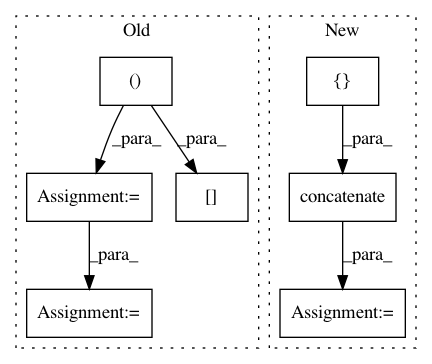

2bae518e899657e536572fa59df6e1587795e397,librosa/feature.py,,line_features,#,332
Before Change
intercept = np.zeros((1, K))
for k in range(0, K):
p = np.polyfit(freq, S[:, k], order)
slope[:, k] = p[0]
intercept[:, k] = p[1]
return (slope, intercept)
// - End Features added by BWalburn
After Change
if freq.ndim == 1:
coefficients = np.polyfit(freq, S, order)
else:
coefficients = np.concatenate([[np.polyfit(freq_t, S_t, order)]
for (freq_t, S_t) in zip(freq.T, S.T)],
axis=0).T
return coefficients
// - End Features added by BWalburn
In pattern: SUPERPATTERN
Frequency: 3
Non-data size: 7
Instances
Project Name: librosa/librosa
Commit Name: 2bae518e899657e536572fa59df6e1587795e397
Time: 2014-12-30
Author: brian.mcfee@nyu.edu
File Name: librosa/feature.py
Class Name:
Method Name: line_features
Project Name: kymatio/kymatio
Commit Name: 60c2e01bfc93bc01da21b79ebe9f222e601e1931
Time: 2020-02-18
Author: janden@flatironinstitute.org
File Name: kymatio/scattering2d/core/scattering2d.py
Class Name:
Method Name: scattering2d
Project Name: keunwoochoi/kapre
Commit Name: fe8a6175dc98c7bc3b667fe88afcb5c2a4c94169
Time: 2017-01-17
Author: gnuchoi+github@gmail.com
File Name: kapre/stft.py
Class Name: Stft
Method Name: call